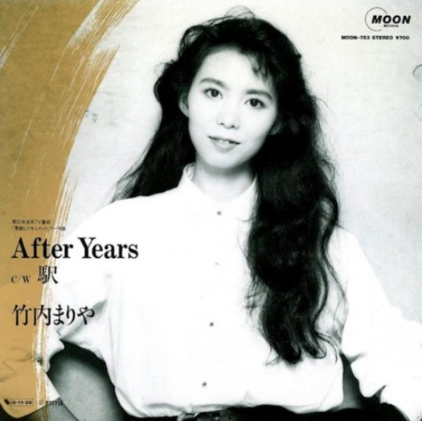

たかじいの音楽お気に入り
← レコード棚に戻る
駅 竹内まりや

発売日
1987年
作詞
竹内まりや
作曲
竹内まりや
編曲
山下達郎
メディア
17㎝シングルレコード（ドーナツ盤）
YouTubeで見る
中森明菜さんへのアルバム収録提供曲でしたが、
セルフカバーの竹内まりやさんの「駅」のほうが有名になったように思います。
ジャケットを見ると発売時この曲はB面だったようです。
歌詞の世界がドラマティックで、その場の情景が目に浮かぶようです。
歌詞の力、曲の力、歌唱の力が見事に合わさって魅力的な作品となっています。
歌詞より
♪♪ 懐かしさの一歩手前で こみあげる苦い思い出に～ ♪♪
歌ネットで歌詞を見る
← レコード棚に戻る
セルフカバーの竹内まりやさんの「駅」のほうが有名になったように思います。
ジャケットを見ると発売時この曲はB面だったようです。
歌詞の世界がドラマティックで、その場の情景が目に浮かぶようです。
歌詞の力、曲の力、歌唱の力が見事に合わさって魅力的な作品となっています。